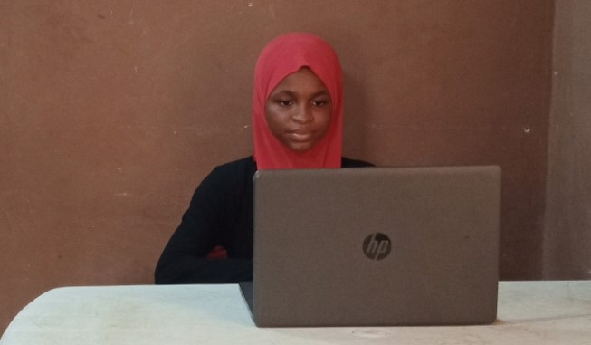

My name is Sumayah Adegbite. I am a 13 year old software developer female-in-tech advocate, passionate about anything tech related. My interest in tech started at the age of five and my curiousity led me to start coding at the age of nine(9). I am quite comfortable working with programming languages under mobile and web development including SCRATCH, HTML, CSS, BOOTSTRAP, JAVASCRIPT and DART(FLUTTER).
I have used my programming skills to develop projects including Scorekeeper, Goal tracker, Todo list, colour game. My participation in various tech groups and community has widened my networking skills and i have had the opportunity to speak in tech conferences. I run a YouTube channel @summydev where I teach simplified coding and tech tutorials and also have tech talks with other notable female developers. My goal is to create a broad network of local and international female software developers and to contribute to solving global community issues using tech.
I am also a techpreneur interested in creating tech related business solutions. this led me to the founding of Summydev Creations, A firm I founded to increase the visibility of businesses for business owners. I have helped several brands improve their visibility online including HOPEWIN and others.
Asides from programming , I have interest in Artificial intelligence (AI) , Robotics, 3D Animations and Graphics design e.t.c.
I hope to join organisations or community whose goal is to promote female tech inclusion.